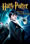
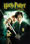
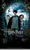
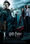
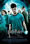
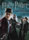
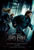
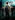
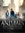

Filmes
Harry Potter e a Pedra Filôsofal
Harry Potter e a Pedra Filosofal é o primeiro filme da saga de livros criado pela escritora J.K. Rowling, o filme que apesar de ser mais curto que o livro não deixa fugir a história de Harry Potter, um garoto de 10 anos, orfão, que foi criado por seus tios Walter e Petunia. Pouco antes de completar 11 anos, Harry começa a receber cartas de uma suposta escola, más que são interceptadas por seus tios.
Ao completar 11 anos, um gigante de nome Hubeo Hagrid invade a casa dos tios de Harry e conta a verdade que nem mesmo o garoto sabia, ele era um Bruxo! Decido a ir para a Escola de Mágia e Bruxaria de Hogwarts, Harry começa descobrir um mundo novo que ele jamais poderia sonhar!
Ele faz novos amigos e até mesmo rivais, e acaba descobrindo da existência de um bruxo das trevas, Lorde Voldemort. Responsável pela mosrte dos pais do garoto, Voldemort reaparece com o desejo de se vingar e retomar o poder com a ajuda da Pedra Filosofal.
Harry e seus amigos enfrentam grandes aventuras e muitos segredos acabam sendo revelados. Assista ao filme e prove um pouco do mundo mágico Potterhead!
Harry Potter e a Camâra Secreta
O segundo filme da saga aborda um pouco do passado do maior bruxo das trevas, Lorde Voldemort. Antes do ínicio escolar, Harry que chateado por não ter notícias de seus amigos, acaba conhecendo Dobby, um elfo doméstico que invadiu a casa dos tios de Harry para alertar o garoto que a Hogwarts já não é mais segura. E para ficar pior, seus tios o proibiram de voltar, trancafiando o garoto no próprio quarto.
O garoto acaba sendo salvo por seu amigo Rony e seus dois irmãos gemêos, Fred e Jorge. Agora livre, ele infrenta outro problema, a passagem para a estação que leva a Hogwarts se fechou, e ai começa a aventura.
O que era para ser apenas mais um ano na Escola de Mágia e Bruxaria de Hogwarts, pode vir à ser o último da história. Coisas estranhas estão acontecendo e ninguém sabe o por que até serem informados que a câmara secreta foi reaberta.
Assista ao filme e veja os mistérios de Harry Potter e a Camâra Secreta.
Harry Potter e o Prisioneiro de Azkaban
O terceiro filme da saga, muito más curto que o livro porém não menos esclarecedor, aborda um pouco do passado de Harry. Uma visita de uma tia faz com que o garoto tenha de fugir de casa. Já nas ruas ele se depara com um cão enorme, e ao levantar a varinha um ônibus de três andares o surpreende, dentro do ônibus ele acaba descobrindo que Siriu Black, um bruxo das trevas acabara de fugir da prisão dos bruxos, Azkaban.
Levado a uma pensão chamada Caldeirão Furado, Harry encontra seus amigos Rony e Hermione e rumam a Escola de Mágia e Bruxaria de Hogwarts, más no meio do caminho são abordados por criaturas chamadas Dementadores, Harry é atacado, más salvo por um bruxo chamado R.J Lupim.
Ataques acontecem pela escola, fazendo com que Sirius Black seja o principal suspeito. Harry descobre que Black matou seus pais, e jura vingança ao bruxo.
Assista ao filme e descubra como foi o encontro entre Harry e Black.
Harry Potter e o Cálice de Fogo
O filme começa com uma visão em um sonho de Harry, Voldemort reaparece e planeja matar o garoto. Harry e a família Weasley vão a Copa Mundial de Quadribol. Mpas o que era para ser um evevnto tranquilo acaba sendo marcado por um ataque de bruxos das trevas ao acampamento provocando medo e causando o caos. A marca negra é acionada, indicando o retorno de Lorde Voldemort.
Ao chegarem em Hogwarts os alunos são informados de que um evento chamado Torneio Tribruxo será sedeado na escola, e duas outras escolas competidoras irão se hospedar ali. Apenas um bruxo de cada escola pode competir. Após o Cálice de Fogo nomear o nome dos 3 alunos competidores, ele acaba nomeando mais um, o de Harry.
Harry terá de enfrentar provas e obstáculos mortais, más nada se compara com o que acontece no final do torneio... Harry é transportado para um cemitério e presenceia o retorno de Vodemort. Os dois lutam, más Harry consegue fugir e alerta a todos.
Assista ao filme e veja o confronto de Harry e Lorde Voldemort!
Harry Potter e a Ordem da Fênix
O quinto filme da saga mostra que o retorno de Voldemort não foi levado tão a sério, no início do filme Harry e seu primo Duda são atacados por dois Dementadores. Harry recebe uma punição e é julgado no Ministério da Mágia, Dumbledore é o "advogado" de Harry, o ministério que apesar de não acreditar no retorno do lorde das trevas, inoscenta o garoto.
De volta a Hogwarts, Harry acaba sabendo que o Ministério irá interferir dietamente na escola. Uma professora que trabalha para o ministério fara da vida dos alunos um verdadeiro inferno! Ela provocara a demissão de Dumbledore, assumindo assim o seu lugar.
Harry, Rony e Hermione montam um grupo de defesa contra as artes das trevas chamado Armada de Dumbledore. Esse grupo enfrenta comensais da morte, nessa batalha Sirius acaba morrendo. Voldemort reaparece e luta contra Dumbledore, ficando visível que ele retornou até mesmo aos olhos do Ministro da Mágia, Cornélio Fudge.
Assista ao filme e veja a épica luta entre Lorde Voldemort e Alvo Dumbledore.
Harry Potter e o Enigma do Príncipe
O sexto filme é provavelmene o mais esclarecedor da saga, ele aborda o passado de Voldemort com mais enfase. O filme se inicia com Harry encontrando Dumbledore, que o convida a uma missão. Após completar essa missão Harry volta a Hogwarts, más ainda dentro do trem Harry resolve espionar Draco, más não é bem sucedido e acaba sendo petrificado e sendo atacado pelo bruxo.
Já em Hogwarts, o garoto recebe de Dumbledore uma nova missão, conseguir uma memória de um professor que no passado foi muito próximo de Tom Riddle, que mais tarde se tornaria Lorde Voldemort. Após conseguir essa memória, Dumbledore conta a Harry que Voldemort dividiu sua alma em 7 partes, más que duas delas já haviam sido destruidas. Dumbledore leva o garoto à uma caverna onde eles conseguem a terceira parte da alma de Voldmort, más essa ida deixa Dumbledore muito fraco. Ao voltar, eles descobrem que a escola foi invadida por comensais da morte e Draco Malfoy tenta matar o diretor, más sem sucesso, quem acaba fazendo o servico é o Professor Severo Snape.
Harry tenta impedir Snape de fugir más não consegue. Depois disso Harry decide ir atrás das partes da alma de Voldemort e recebe o apoio de seus amigos.
Assista o filme e veja a trágica morte de Dumbledore.
Harry Potter e as Relíquias Da Morte PT.1
O filme se inicia com um novo Ministro da Mágia fazendo um pronunciamento, os tios de Harry fugindo e Hermione apagando as memórias que seus pais, ela faz isso por segurança, pois mitas familias de trouxas estão sendo atacadas. logo em seguida Harry é resgatado pela ordem da fênix, eles se dividem em duplas más são atacados por comensais da morte. No meio do ataque Fred é atacado e perde sua orelha esqueda, e Olho Tonto Moody é morto.
Gui e Fleir se casam, más no meio do casamento comensais da morte atacam, fazendo Harry, Rony e Hermione aparatarem para Londres. Lá eles começam a caçar outra parta da alma de Voldemort, más na fuga Rony é ferido. Os dois garotos brigam, más acabam fazendo as pazes mais tarde e conseguem juntos descruir a parte da alma.
Na busca de mais infomações eles acabam sendo capturados por caçadores, e são levados a mansão da familia Malfoy. Lá Harry descobre que uma parte da alma de Voldemort está no banco dos bruxos, o Gringotes. Dobby o elfo doméstico salva Harry e seus amigos, más é morto por Belatriz.
Assista o filme e veja o penulimo filme da saga.
Harry Potter e as Relíquias Da Morte PT.2
O ultio filme se inicia com Voldemort roubando a varinha das varinhas do tumulo de Dumbledore. Snape agora é o diretor de Hogwarts. Harry e seus amigos planejam invadir o banco com a ajuda de um duende que trabalhou lá. ao chegar o banco eles enfeitiçam um dos responsáveis. Ao entrar no cofre um feitço de gemêos é ativado e tudo em que eles tocam é duplicado. Hary encontra a parte da alma e saem do banco em um dragão.
Voldemort invade a mente de Harry e descobre que os garotos planejam mata-lo. Harry, Rony e Hermione vão para Hogsmead e encontram o irmão de Dumbledore. Ele os leva até uma passagem para o castelo. Chegando lá Harry conta aos alunos que eles tem que achar a penultima parte da alma de Voldemort. A ordem reaparece e expulsa Snape do castelo.
O castelo é atacdo por Voldemort e seus comensais da morte, muitos bruxos morrem, entre eles Jorge Weasley. Lupin e Tonks, entre outros.
Assista ao último filme da saga e acompanhe a batalha épica entre Harry Potter e Lorde Voldemort.
Animais Fantásticos e Onde Habitam
Animais Fantásicos e Onde Hábitam conta a história de Newt Scammander, um bruxo que está escrevendo um livro sobre criaturas mágicas. Newt é um ex aluno de Hogwarts, amigo de Alvo Dumbledore, Newt vai a Nova Iorque atrás de um bruxo que também cuida de animais mágicos, ele carrega uma máleta com um feitiço de extensão que permite a ele guardar vários animais. Ele acaba trocando de maleta com um homem, os animais acabam fugindo fazendo Newt ter que ir atras deles.
Newt recebe a ajuda de uma ex auror e de sua irmã, a Ministra da Mágia de Nova Iorque nã acredita na história de Newt e resolve dete-los. Ataques estão acontecendo na cidade, más niguém sabe quem os está provocando. Newt consegue encontrar a maior parte de seus animais.
Mais tarde eles descobrem que um Obscurial é o responsável pelos ataques a cidade, e Newt descobre que Gerardo Grindelwald, o bruxo das trevas, está tentando dominar o monstro. O bruxo é detido más com isso a comunidade mágica norte americana é exposta ao público. Newt então libera uma de suas criaturas e com ela uma chuva com propriedades obliviaticas cai sobe todos, fazendo assim suas meórias recetes serem apagadas, mantendo a comunidade mágica à salvo.
Assista ao filme Animais Fantásticos e Onde Hábitam e veja o mundo mágico de J.K Rowling de outra maneira!